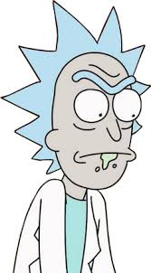

Personajes:
Rick Sanchez
Rick Sanchez: Científico loco e inventor, abuelo alcohólico y excéntrico
Morty Smith

Morty Smith: Nieto ingenuo y nervioso, compañero de aventuras de Rick
Summer Smith

Summer Smith: Hermana mayor de Morty, adolescente segura de sí misma
Jerry Smith

Jerry Smith: Padre de Morty y Summer, inseguro y tímido, esposo de Beth
Beth Smith

Beth Smith: Madre de Morty y Summer, cirujana equina y esposa de Jerry